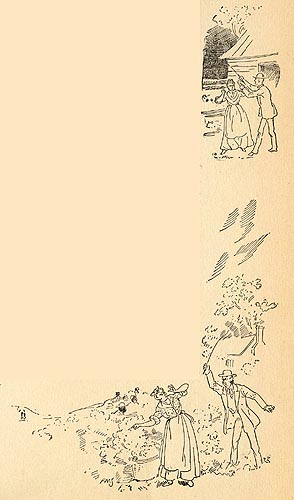

|
 Two
chapters after Tom sells Roxy back into slavery, she
re-appears in St. Louis, having escaped from the Arkansas
plantation. Disguised as a man in blackface, she angrily
tells him what she's been through, and although it is told
rather than shown, this indirect 5-page account is the most
emotionally charged description of the horrors of slavery
in all MT's work. Jealous of her good looks, the plantation mistress sends Roxy "out to de quarter 'mongst de common fiel' han's" and orders the overseer to be especially harsh to her. Roxy describes the man who bought her as "good enough, as planters goes," but both the mistress and the overseer are Yanks, "outen New England', en anybody down South kin tell you what dat mean. Dey knows how to work a nigger to death, en dey knows how to whale 'em too." In these two illustrations we see the overseer administering two of the many lashings Roxy suffers. The Barrett Collection, UVA PS 1317 .A1 1894 |